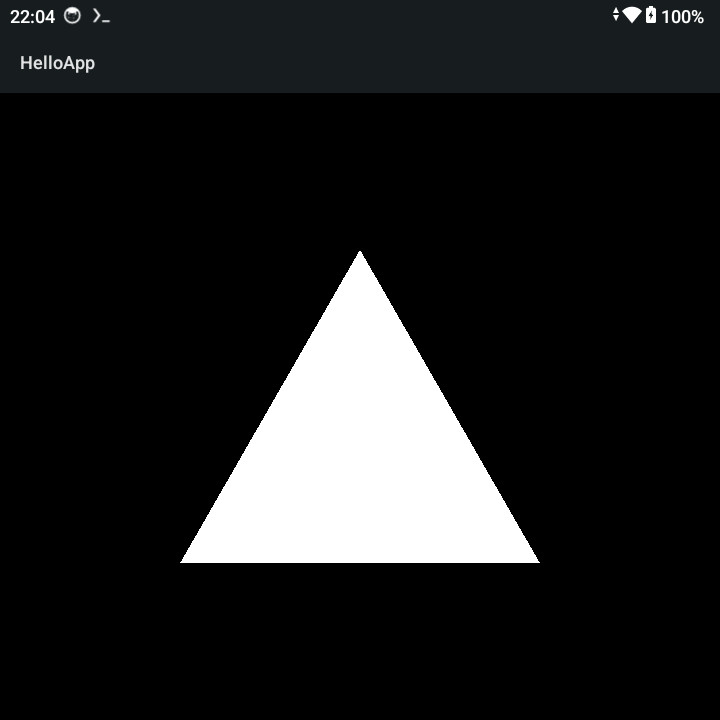

settings.gradle
pluginManagement {
repositories {
google()
mavenCentral()
gradlePluginPortal()
}
}
dependencyResolutionManagement {
repositories {
google()
mavenCentral()
}
}
rootProject.name = "hello-android"
include(":app")
build.gradle
buildscript {
repositories {
google()
mavenCentral()
}
dependencies {
classpath "com.android.tools.build:gradle:8.2.2"
}
}
執行如下命令：
$ gradle wrapper $ ./gradlew $ mkdir -p app/src/main/java/com/example/hello $ mkdir -p app/src/main/res
app/build.gradle
plugins {
id "com.android.application"
}
android {
namespace "com.example.hello"
compileSdk 34
defaultConfig {
applicationId "com.example.hello"
minSdk 21
targetSdk 34
versionCode 1
versionName "1.0"
}
}
app/src/main/AndroidManifest.xml
<manifest xmlns:android="http://schemas.android.com/apk/res/android">
<application
android:label="HelloApp">
<activity
android:name=".MainActivity"
android:exported="true">
<intent-filter>
<action android:name="android.intent.action.MAIN"/>
<category android:name="android.intent.category.LAUNCHER"/>
</intent-filter>
</activity>
</application>
</manifest>
app/src/main/java/com/example/hello/MainActivity.java
package com.example.hello;
import android.app.Activity;
import android.opengl.GLES20;
import android.opengl.GLSurfaceView;
import android.os.Bundle;
import java.nio.ByteBuffer;
import java.nio.ByteOrder;
import java.nio.FloatBuffer;
import javax.microedition.khronos.egl.EGLConfig;
import javax.microedition.khronos.opengles.GL10;
public class MainActivity extends Activity {
@Override
protected void onCreate(Bundle savedInstanceState) {
super.onCreate(savedInstanceState);
GLSurfaceView glView = new GLSurfaceView(this);
glView.setEGLContextClientVersion(2);
glView.setRenderer(new TriangleRenderer());
setContentView(glView);
}
static class TriangleRenderer implements GLSurfaceView.Renderer {
private final float[] triangleCoords = {
0.0f, 0.5f, 0.0f,
-0.5f, -0.5f, 0.0f,
0.5f, -0.5f, 0.0f
};
private int pos;
private int program;
private FloatBuffer vertexBuffer;
private final String vertexShaderCode =
"attribute vec4 vPosition;" +
"void main() {" +
" gl_Position = vPosition;" +
"}";
private final String fragmentShaderCode =
"precision mediump float;" +
"void main() {" +
" gl_FragColor = vec4(1.0, 1.0, 1.0, 1.0);" +
"}";
@Override
public void onSurfaceCreated(GL10 gl, EGLConfig config) {
GLES20.glClearColor(0.0f, 0.0f, 0.0f, 1.0f);
ByteBuffer bb = ByteBuffer.allocateDirect(triangleCoords.length * 4);
bb.order(ByteOrder.nativeOrder());
vertexBuffer = bb.asFloatBuffer();
vertexBuffer.put(triangleCoords);
vertexBuffer.position(0);
int vertexShader = loadShader(GLES20.GL_VERTEX_SHADER, vertexShaderCode);
int fragmentShader = loadShader(GLES20.GL_FRAGMENT_SHADER, fragmentShaderCode);
program = GLES20.glCreateProgram();
GLES20.glAttachShader(program, vertexShader);
GLES20.glAttachShader(program, fragmentShader);
GLES20.glLinkProgram(program);
GLES20.glUseProgram(program);
}
@Override
public void onSurfaceChanged(GL10 gl, int width, int height) {
GLES20.glViewport(0, 0, width, height);
}
@Override
public void onDrawFrame(GL10 gl) {
GLES20.glClear(GLES20.GL_COLOR_BUFFER_BIT);
pos = GLES20.glGetAttribLocation(program, "vPosition");
GLES20.glEnableVertexAttribArray(pos);
GLES20.glVertexAttribPointer(pos, 3, GLES20.GL_FLOAT, false, 3 * 4, vertexBuffer);
GLES20.glDrawArrays(GLES20.GL_TRIANGLES, 0, 3);
GLES20.glDisableVertexAttribArray(pos);
}
private int loadShader(int type, String shaderCode) {
int shader = GLES20.glCreateShader(type);
GLES20.glShaderSource(shader, shaderCode);
GLES20.glCompileShader(shader);
return shader;
}
}
}
編譯
$ ./gradlew assembleDebug
$ file app/build/outputs/apk/debug/app-debug.apk
app/build/outputs/apk/debug/app-debug.apk: Android package (APK), with gradle app-metadata.properties, with APK Signing Block
完成
